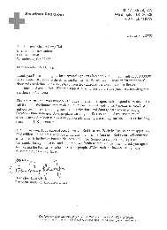

Tableau 1: Les dépenses des activités de secours à Formose d'octobre à décembre 1999
| L'amour en action |
du désastre au Venezuela |
|  |
Reçu d'une contribution de 30 000 $US du Maître Suprême Ching Hai à la Croix Rouge pour venir en aide aux victimes des inondations au Venezuela. |
En décembre dernier, des averses torrentielles qui ont duré deux semaines ont dévasté Caracas, la capitale du Venezuela et les régions côtières le long de la mer des Caraïbes, créant de la boue très glissante qui a fait débouler et a entraîné d'énormes pierres dans les torrents des montagnes. Ce pire désastre naturel du siècle au Venezuela a détruit un grand nombre de maisons et d'infrastructures, et a laissé des dizaines de milliers de personnes sans maison. En entendant cette nouvelle, Maître Suprême Ching Hai, pleine de compassion a fait parvenir un montant de 30 000 $US à la Croix Rouge pour venir en aide aux victimes de l'inondation au Venezuela.
Tableau 1: Les dépenses des activités de secours à Formose d'octobre à décembre 1999
| Lieu | Date | Description | Montants en dollars NT | Reçu N° |
| Tainan | 06/10/1999 | Conférence spirituelle et spectacle de divertissement pour les détenus du centre de détention de Tainan | 0 | |
| Taipei | 11/10/1999 | Participation à la messe nationale en souvenir des victimes du tremblement de terre du 21 septembre | 0 | |
| Taichung | 15/10/1999 | Conférence spirituelle pour les détenus du centre de détention de Taichung | 0 | |
| Taipei | 22/10/1999 | Participation aux activités de secours : au Taipei Rotary Club pour la reconstruction de l'hôpital Puli Christian | 50.000 | (1) |
| Taipei | 06/11/1999 | Présence au concert donné par la Commission Nationale de la Jeunesse en témoignage des équipes de jeunes volontaires et des secouristes locaux et étrangers qui ont participé au travail de secours du tremblement de terre du 21 septembre | 0 | |
| Hualien | 10/11/1999 | Participation au fonds de secours et d'amour pour les jeunes délinquants malades, dans le besoin et financièrement déshérités, créé par la Branche de Hualien de l'Association de Protection de la Nouvelle Vie à Formose | 10.000 | (2) |
| Miaoli | 14/11/1999 | Nettoyage de l'autoroute n° 28 de Miaoli dans le cadre d'un programme de protection de l'environnement lancé par le bureau cantonal de Hsihu (travail volontaire) | 0 | |
| Pingtung | 28/11/1999 | Soins et consultations médicales gratuites pour les villageois du village Hsinchih du canton de Wanluan | 28.047 | (3) |
| Taipei | 17/12/1999 | Parrainage des installations d'éclairage de nuit du lycée Lungshan de la municipalité de Taipei du 19 au 31 décembre | 10.000 | (4) |
| Hualien | 06/12/1999 | Conseil et assistance aux détenus sur le point d'être libérés qui sont sous la surveillance de la Branche de Hualien de l'Association de Protection de la Nouvelle Vie à Formose (travail volontaire) | 0 | |
| Chiayi | 20/12/1999 | Cadeau monétaire de fin d'année pour les patients âgés de l'hôpital Chiristian de Chiayi | 10.000 | (5) |
| Hualien | 20/12/1999 | Manteaux et nourriture pour les prisonniers en liberté conditionnelle malades et dans le besoin recevant des soins du bureau du procureur du tribunal d'instance de Hualien et de la Branche de Hualien de l'Association de Protection de la Nouvelle Vie à Formose | 20.487 | (6) |
| Hsinchu | 21/12/1999 | Vêtements d'hiver et nourriture pour les sans-abri à Hsinchu (apportés par les membres) | 0 | |
| Nantou | 22/12/1999 | Vêtements d'hiver pour les villageois dans le besoin et les victimes du tremblement de terre du village Yuanfeng du canton Jenai dans les montagnes éloignées | 40.196 | (7) |
| Chiayi | 22/12/1999 | Dons monétaires et manteaux pour les étudiants dans le besoin des lycées de Taihsi et Mailiao | 41.438 | (8) |
| Keelung | 23/12/1999 | Vêtements d'hiver et cadeaux pour les personnes âgées vivant seules ou dans le besoin à la maison de retraite de Yintzu, et les sans-abri recueillis à l'hôpital Nankuang | 24.615 | (9) |
| Changhua | 23/12/1999 | Vêtements d'hiver, tentes et nourriture pour les foyers sans ressources et les sans-abri du comté de Changhua | 57.978 | (10) |
| Kaoping | 23/12/1999 | Duvets et nourriture pour les sans-abri dans les rues de Kaohsiung et Pingtung | 24.082 | (11) |
| Taipei | 24/12/1999 | Manteaux, sacs de couchage et couvertures pour les sans-abri sans ressources dans le comté et la ville de Taipei | 34.090 | (12) |
| Tainan | 24/12/1999 | Vêtements chauds et nourriture pour les sans-abri et personnes sans ressources dans le comté et la ville de Tainan | 64.990 | (13) |
| Ilan | 24/12/1999 | Sacs de couchage pour les sans-abri à Ilan | 4.500 | (14) |
| Hsinchu | 25/12/1999 | Dons monétaires, manteaux et nourriture pour les personnes dans le besoin vivant seules et les foyers sans ressources à Hsinchu | 23.627 | (15) |
| Taichung | 25/12/1999 | Dons monétaires, vêtements chauds et nourriture pour les foyers à faible revenus et les sans-abri à Taichung | 153.034 | (16) |
| Total : | 597.084 | |||
| Remarques : les numéros 5 à 16 sont les activités "Réchauffez les coeurs en Hiver" pour les familles dans le besoin et les sans-abri. |
Tableau 2 : Les dépenses des activités de secours à Formose d'octobre à décembre 1999
| Montant en dollars NT | |||||||
| October 1999 | November 1999 | December 1999 | |||||
| Lieu | Nb de foyers | Montant | Nb de foyers | Montant | Nb de foyers | Montant | Appendice |
| Keelung | 1 | 2 000 | 1 | 2 000 | 1 | 2 000 | A |
| Taipei | 8 | 20 000 | 8 | 26 000 | 8 | 19 000 | B |
| Taoyuan | 3 | 7 000 | 3 | 7 000 | 3 | 7 000 | C |
| Hsinchu | 1 | 3 000 | 1 | 3 000 | 1 | 3 000 | D |
| Miaoli | 2 | 6 000 | 2 | 6 000 | 2 | 6 000 | E |
| Taichung | 7 | 14 000 | 6 | 12 000 | 6 | 12 000 | F |
| Nantou | 5 | 11 400 | 8 | 29 400 | 8 | 29 200 | G |
| Chiayi | 6 | 13 000 | 6 | 13 000 | 6 | 13 000 | H |
| Tainan | 1 | 3 000 | 1 | 3 000 | 1 | 3 000 | I |
| Kaoping | 3 | 7 000 | 3 | 7 000 | 3 | 7 000 | J |
| Ilan | 1 | 2 000 | 1 | 2 000 | K | ||
| Taitung | 6 | 14 000 | 6 | 14 000 | 6 | 14 000 | L |
| Penghu | 2 | 4 000 | 2 | 4 000 | 2 | 4 000 | M |
| Sous-total par mois | 46 | 160 400$ | 48 | 128 400$ | 47 | 119 200$ | |
| Total : | 354000$ | ||||||
Total des dépenses des activités de secours et caritatives à Formose d'octobre à décembre 1999, listées dans les tableaux 1 et 2, s'élèvent à 951 084$NT (environ 30 680$US)
Tableau 3 :Résumé des activités de secours à travers le monde pour les victimes des désastres et dons caritatifs de Maître Suprême Ching Hai et de Son Association Internationale de janvier à décembre en 1999 (en dollar US)
| Pays bénéficiaire | Année/Mois | Article | Montant du don | Montant converti en dollars US | N° de la revue en référence |
| Formose | 09.10/1999 | Secours de réserve, fonds de condoléances, secours comptant, etc. pour le tremblement de terre du 21/09 à Formose | NT$5.117.648 | US$159.929 | 107 |
| 01.12/1999 | Dépense mensuelle pour les secours aux foyers dans le besoin à Formose | NT$1.319.455 | US$41.234 | 101, 103, 105, 107, 109 | |
| 01.12/1999 | Activités caritatives à Formose | NT$3.081.857 | US$96.309 | 101, 103, 105, 107, 109 | |
| Formose | 03-99 | Don d'une ambulance par le Maître Suprême Ching Hai au comté de Hsihu | NT$1.000.000 | US$31.250 | 102 |
| Formose | 09-99 | Don au compte de secours du tremblement de terre du 21/09 créé par le Ministre de l'Intérieur de la République de Chine | NT$10.000.000 | US$312.500 | 106 |
| Formose | 10-99 | Secours suite au tremblement de terre de Formose par le Centre de Sydney | AU$12.000 | US$7.800 | 107 |
| Hong Kong | 09.10/1999 | Secours aux victimes du typhon à Hong Kong | HK$77.500 | US$9.961 | 106 |
| Philippines | 02-99 | Don au projet de reboisement et de préservation du sol de la province d'Isabela | US$100.000 | US$100.000 | 102 |
| 02-99 | Don d'un système d'approvisionnement d'eau au village Malinan, province de Cotabato | US$5.263 | US$5.263 | 102 | |
| Chine (continentale) | 08-99 | Secours suite aux inondations à travers la Fédération Internationale de la Croix Rouge et des Associations du Croissant Rouge | US$120.000 | US$120.000 | 105, 107 |
| 08-99 | Secours des inondations par les initiés de Hong Kong | HK$40.000 | US$5.128 | 105 | |
| Au Lac | 02-99 | Aide aux pauvres au nouvel an lunaire | US$50.000 | US$50.000 | 102 |
| 04-99 | Dons et aide aux lépreux | US$2.000 | US$2.000 | 103 | |
| 08-99 | Secours suite aux inondations in Binh Thuan | VN$556.400.000 | US$40.000 | 106 | |
| 11-99 | Secours suite aux inondations à Quang Nam, Thua Thien et Qang Tri par les initiés des Etats-Unis, Canada et Australie | US$104.576,88 | US$104.576,88 | 109 | |
| Indonésie | 09-99 | Secours aux victimes de la guerre du Timor Oriental par le Centre de Sydney | 2 400$AU | 1 560$US | 107 |
| Canada | 1 2/99 | Aide aux pauvres au nouvel an lunaire | 2 300$US | 2 300$US | |
| Etats-Unis | 01-99 | Don à la Fondation Starlight Children | 100 000$US | 100 000$US | 100 |
| 01-99 | Don à l'hôpital pour la recherche pour enfants St Jude | 150 000$US | 150 000$US | 100 | |
| 02-99 | Don à la Chorale de garçons de Pasadena pour le fonds de scolarité et les publications spirituelles | 20 000$US | 20 000$US | 100, 102 | |
| 03-99 | Don à la Fondation Starlight Children | 25 000$US | 25 000$US | ||
| 03-99 | Don à l'hôpital pour la recherche pour enfants St Jude | 10 000$US | 10 000$US | 101 | |
| 09-99 | Secours aux victimes de la tornade de Hampton, Virginie | 50 000$US | 50 000$US | 106 | |
| 09-99 | Don aux victimes de l'ouragan Floyd en Caroline du Nord | 19 010,40$US | 19 010,40$US | 107 | |
| Mexique | 10-99 | Secours suite aux désastres des ouragans | 30 000$US | 30 000$US | 107 |
| 10-99 | Secours suite au tremblement de terre par le Centre de Sydney | 2 840$AU | 1 846$US | 107 | |
| Australie | 03-99 | Don de vêtements aux victimes du cyclone Vance | 2 790$AU | 1 814$US | 102 |
| 09-99 | Don aux Services de Santé des Champs de Foire par le Centre de Sydney | 550$AU | 358$US | 107 | |
| Arménie | 05-99 | Dons caritatifs par Maître durant sa visite en Arménie | 250 000$US | 250 000$US | 104, 105 |
| Kosovo | 06-99 | Don aux victimes de la guerre du Kosovo à travers la Croix Rouge | 50 000$US | 50 000$US | 103 |
| 08-99 | Second don aux victimes de la guerre du Kosovo à travers la Croix Rouge | 50 000$US | 50 000$US | 105 | |
| 05-99 | Don aux victimes de la guerre du Kosovo à travers IGA par les initiés de Los Angeles, Etats-Unis | 7 600$US | 7 600$US | 105 | |
| 04-99 | Don aux victimes de la guerre du Kosovo par le Centre de Sydney | 2 000$AU | 1 300$US | 107 | |
| Turquie | 08-99 | Secours suite au tremblement de terre par les initiés de Formose | 400 000$NT | 125 000$US | 105 |
| 08-99 | Secours suite au tremblement de terre par le Centre Principal à Formose de l'Association Internationale de Maître Suprême Ching Hai | 1 156 997$NT | 36 156$US | 107 | |
| 08-99 | Don d'articles de secours d'urgence suite au tremblement de terre par le Centre de Singapour | 28 743$S | 17 078$US | 105 | |
| 09-99 | Don en espèces pour les secours suite au tremblement de terre, avec des articles de secours supplémentaire, par les initiés de Los Angeles, Etats-Unis | 10 000$US | 10 000$US | 106 | |
| 09-99 | Secours suite au tremblement de terre par le Centre de Sydney | 3 000$AU | 1 950$US | 107 | |
| Grèce | 09-99 | Don aux secours suite au tremblement de terre d'Athènes à travers le Croix Rouge | 10 000$US | 10 000$US | 106 |
| Afrique du Sud | 12-99 | Don aux enfants danseurs zoulous | 10 000$US | 10 000$US | 108 |
| 12-99 | Don aux habitants de Xhosa | 52 000$US | 52 000$US | 108 | |
| 12-99 | Don au Parlement des réligions du monde pour l'aide aux enfants de Durban | Envir 100 000$ | 16 666$US | 108 | |
| 12-99 | Don au refuge pour gosses de Johannesburg | 20 100$US | 20 100$US | 108 | |
| Vénézuéla | 12-99 | Don aux victimes des inondations à travers le Croix Rouge américaine | 30 000$US | 30 000$US | 109 |
| A travers le monde | 12-99 | Dons du Maître Suprême Ching Hai aux Centres locaux pour aider les sans-abri pendant la période de Noël | 18 761,08$US | 18 761,08$US | 109 |
| Au total | 2,204,450 36$US |